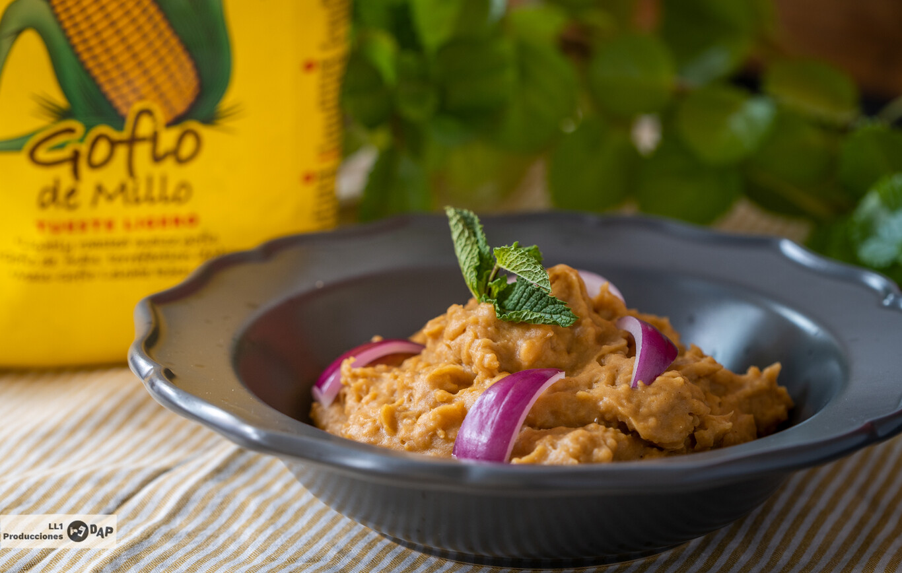

Escaldon

¿What is the Canarian Escaldón de gofio?
One of the best things about travelling and discovering new places is,
without a doubt, tasting the local gastronomy and products.
If you're planning a trip to Tenerife, there's one typical dish of the island that you can't miss: escaldón de gofio.
Escaldón de gofio is an ancient and traditional recipe from the island of Tenerife.
It is made by boiling a meat or fish stock which is then poured over the gofio in an earthenware bowl (lebrillo) and kneaded to a more or less thick consistency.
Escaldón de gofio can be served as a starter with other dishes or as a main course with a stew or fish casserole.
If you haven't tried this dish yet, here is the recipe so you can prepare it at home.
How to make it
Ingredients:
- 800 millilitres of meat
- Fish or vegetable stock
- 250 grams of gofio
- One red onion
- Fresh white cheese
- Shredded pork ribs
- Coriander mojo
- Red mojo (mild or spicy)
Preparation:
- Start by heating the broth, which can be bought or made at home.
- Next, take an earthenware or ceramic bowl and add the gofio and add the stock little by little.
- Mix well with a fork until the mixture is homogeneous and season to taste.
- Shred the pork ribs and add them to the escaldón.
- As opcional step, you can dd the chopped onion and the chopped cheese.
- When serving, add coriander mojo and red mojo on top.
And with this it is ready to eat. We hope you like this typical Canarian dish which is so easy to prepare.